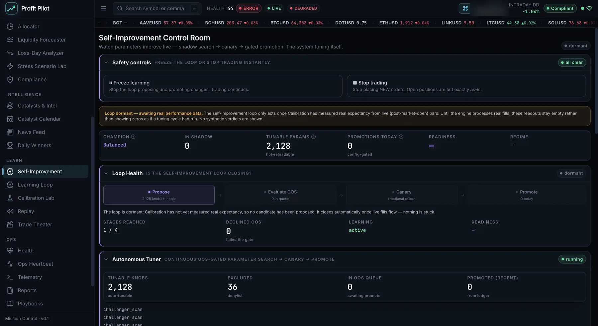

Five layers of testing, before anything reaches a broker
A trading system is only as trustworthy as the machinery built to attack it. Profit Pilot carries five independent verification layers, each designed to catch a failure the others would miss.
Historical backtesting
Every sleeve runs against historical bars through the same event bus the live engine uses — the identical code path, not a parallel research implementation. Commissions and slippage are modelled, and the report ships with its own data-quality header, including an explicit survivorship-bias notice when the dataset contains only currently-listed symbols.
Deterministic blind replay
Any recorded session can be replayed bar for bar and must reproduce a byte-identical event sequence. This is what makes a bug from three weeks ago reproducible on demand, and it is how a code change is proven to have altered nothing it should not have. Golden-replay determinism runs in CI.
Out-of-sample gating
Challenger parameter sets are scored on data outside the window they were fitted on, and clearing that gate is a requirement rather than a formality. Only survivors advance — and they advance to a fractional canary, never straight to full size. A significance threshold, a cooldown window and a per-day promotion cap sit behind that.
Monte Carlo & synthetic scenarios
The Ghost Synthetic Scenario Engine generates market conditions the historical record does not contain, and the Stress Scenario Lab pushes the portfolio through constructed shocks. Resampling turns single-path results into distributions, so a result is judged on its range rather than its one lucky history.
Live forward testing
The system runs continuously in paper trading against a live brokerage API with real market data — real quotes, real order routing, real fill reconciliation. Forward testing is the only layer that cannot be overfitted, because the data has not been written yet. Every session is reconciled against the broker, and a fail-closed kill switch halts trading on any mismatch between what the engine believes it holds and what the broker reports.

Underneath all five sits an append-only decision ledger recording every cycle's verdict, so the exact parameter state of the system at any past moment can be reconstructed. A self-modifying system without an audit trail is one that can never be debugged after the fact — so the audit trail was built first.
Where it goes from here
Profit Pilot is in its first full testing year. The platform is built and running; the work now is deepening the research layer around it.
Rolling out-of-sample evaluation across historical data. Tuning, backtest and challenger evaluation already exist as components — this is the orchestration layer that chains them into a continuous rolling protocol.
Tightening the fill model so simulated execution tracks live execution more closely — queue position, partial fills under stress, and market impact.
Measuring all six sleeves independently rather than in aggregate, so capital concentrates in the ones earning their risk budget.
The live symbol set is currently capped by the market-data plan. Lifting that cap widens the opportunity set the allocator can select from.
The Profit Pilot engine repository is private. A read-only walkthrough is available on request.